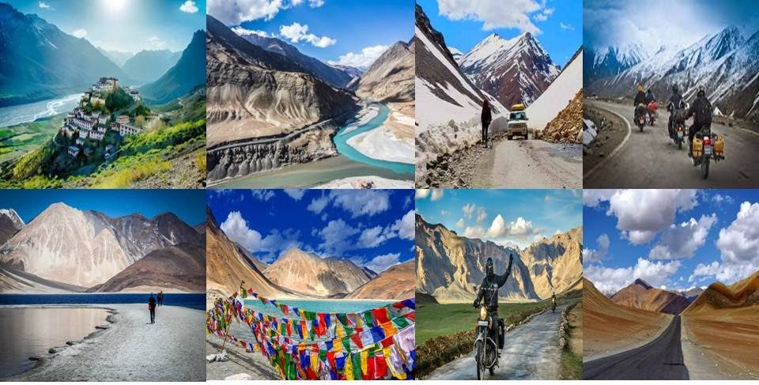
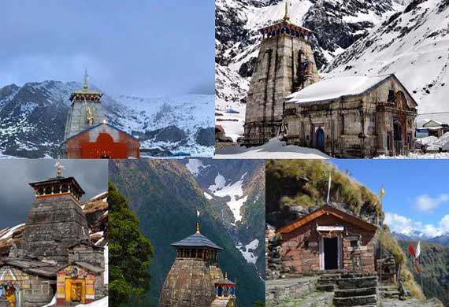
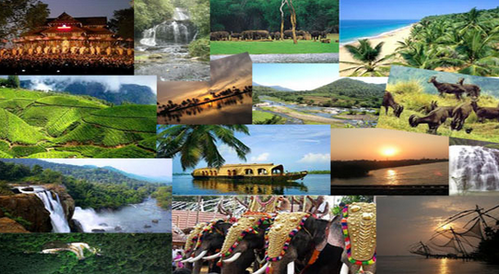

About Us
Back To Home
Tourism
- Tourism numbers declined as a result of a strong economic slowdown (the late-2000s recession) between the second.
- The 2009 H1N1 influenza virus,but slowly recovered until the COVID-19 pandemic put an abrupt end to the growth.
- International tourist arrivals might decrease by 58% to 78% in 2020, leading to a potential loss of US$0.9-1.2.
- Globally, international tourism receipts (the travel item in balance of payments) grew to US$1.03 trillion (€740 billion) in 2005.
- Corresponding to an increase in real terms of 3.8% from 2010,International tourist arrivals surpassed.
- The milestone of 1 billion tourists globally for the first time in 2012,[emerging source markets such as China, Russia, and Brazil.
- Global tourism accounts for c. 8% of global greenhouse-gas emissions.
Tour Places
Click Here To Best Tours Offers

1.Kashmir
Kashmir is the northernmost geographical region of the Indian subcontinent. Until the mid-19th century,the term "Kashmir" denoted only the Kashmir Valley between the Great Himalayas and the Pir Panjal Range. Today, the term encompasses a larger area that includes the Indian-administered territories of Jammu and Kashmir and Ladakh, the Pakistani-administered territories of Azad Kashmir and Gilgit-Baltistan.

2.Ladakh
Ladakh is a region administered by India as a union territory, which constitutes a part of the larger Kashmir region and has been the subject of dispute between India, Pakistan, and China since 1947. Ladakh is bordered by the Tibet Autonomous Region to the east, the Indian state of Himachal Pradesh to the south, both the Indian-administered union territory of Jammu and Kashmir and the Pakistan-administered.

3.Kedarnath
Kedarnath is a town in Rudraprayag district in the state of Uttarakhand in India and has gained importance because of the Kedarnath Temple. It is approximately 86 kilometres from Rudraprayag, the district headquarter. It is a Nagar panchayat in the Rudraprayag district. Kedarnath is the most remote of the four Chota Char Dham pilgrimage sites. It is located in the Himalayas, about 3,583 m (11,755 ft) above sea level near.

BACK